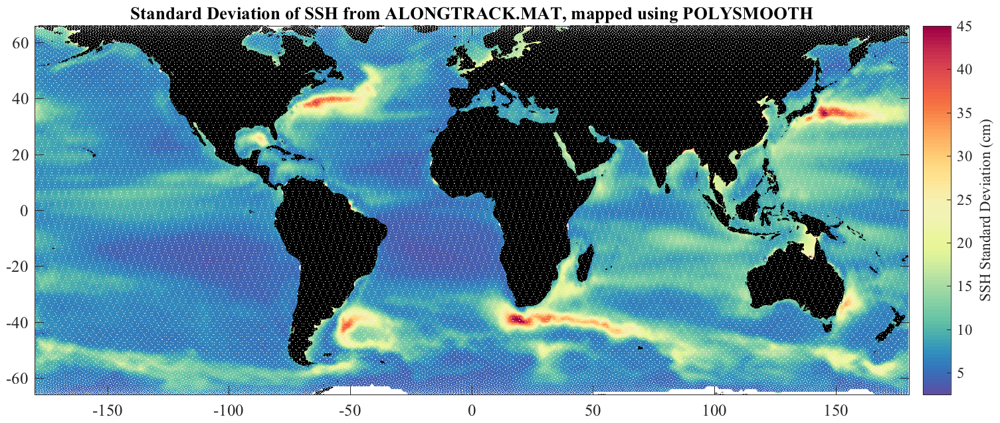
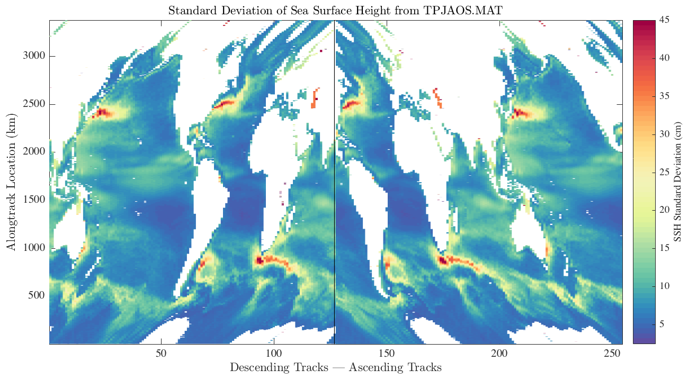

ABOUT_TPJAOS Sea surface height anomalies from the Beckley merged dataset. _______________________________________________________________________  _______________________________________________________________________ TPJAOS.MAT and TPJAOS.NC contain sea surface height anomalies from the integrated alongtrack altimetry dataset, available online at https://podaac.jpl.nasa.gov/dataset/MERGED_TP_J1_OSTM_OST_ALL_V42 This dataset is produced by Brian Beckley and collaborators on NASA's Ocean Surface Topography Science Team (OSTST). It contains data from the TOPEX/Poseidon, Jason-1, OSTM/Jason-2, and Jason-3 satellites. Currently TPJAOS contains data through October 27, 2019. TPJAOS is a slightly reorganized matfile version of the NetCDF files distributed at PO.DAAC, and is redistributed with permission. TPAJOS.MAT is a Matlab version, while TPAJOS.NC is a NetCDF version. These both contain identical data. TPJAOS is distributed as a part of JDATA, a supplement to the software toolbox JLAB, and is available at http://www.jmlilly.net. _______________________________________________________________________ Overview Various processing steps have been carried out to remove bad data points, as described below. In Matlab, LOAD TPJAOS for the Matlab version, or NCLOAD TPJAOS for the NetCdf version, leads to a structure containing the following fields: tpjaos.about Pointer to this document tpjaos.num Cycle start in DATENUM format [999 x 1] tpjaos.dnum Days from cycle start date [3375 x 254] tpjaos.lat Latitude [3375 x 254] tpjaos.lon Longitude [3375 x 254] tpjaos.atd Along-track distance (km) [3375 x 254] tpjaos.dfc Distance from coast (km) [3375 x 254] tpjaos.depth Bathymetry depth (km) [3375 x 254] tpjaos.mss Mean sea surface height (cm) [3375 x 254] tpjaos.ssh Sea surface height anomaly (cm) [3375 x 254 x 999] The mean sea surface height is given in the PO.DAAC documentation as being the DTU10 Global Gravity field of Anderson (2010). Note that sea surface height is here given in centimeters. The along-track distance ATD is computed by SPHEREDIST. Distance from the coast DFC is provided by the source dataset. DEPTH is computed by interpolating the one-minute Smith and Sandwell database, see READTOPO. The first dimension, of length 3375, is the number of measurements along each track. The second, of dimension 254, is the number of tracks split into their descending and ascending portions. The third dimension is the number of cycles. In Matlab, use the JLAB routine USE, as in 'use tpjaos', to map the fields into named variables in the workspace--num, lat, lon, ssh, etc. The figure shown at the top is the standard deviation of sea surface height, mapped onto a regular grid with POLYSMOOTH. It can be re-created with 'polysmooth --f2'. Note that this is computationally expensive and may take a while. Regional datasets can be extracted with the JLAB function TRACKEXTRACT. _______________________________________________________________________ Time details NUM is the time at the beginning of each cycle, in Matlab's DATENUM format. DNUM is the mean difference from this time, averaged over all cycles, for each location along each track. Specifically, NUM is defined as beginning at 4:05 AM on Sept 23, 1992, and proceeding uniformly with a time interval of 9.915645 days. This matches the first time for each cycle to within about two minutes. The exact measurement time is approximating by adding the NUM value for each cycle to the DNUM value appropriate for each alongtrack location. This approximate measurement time is given by FULLNUM=VREP(PERMUTE(NUM,[3 2 1]),[SIZE(DNUM,2) SIZE(DNUM,3)],[2 3])... + VREP(DNUM,LENGTH(NUM),3); which approximates the exact time with an average deviation of less than one minute, and a maximum deviation of less that five minutes. In order to save space, the exact times for each measurement are not re-distributed here. _______________________________________________________________________ Organization The data has been re-organized somewhat from its original format. Each track has been split into a descending and ascending portion. All descending passes are presented first, but flipped north/south to be sorted by the longitude of their southernmost point, beginning with the first track having a southernmost point east of longitude -180. Then all ascending passes are presented, also sorted from longitude -180 based on their initial or southernmost point. This reorganization makes it easier to locate tracks that fall through particular latitude / longitude points. Also, each row of SSH occurs at essentially the same latitude, so one can directly average the alongtrack data to get meaningful statistics across latitudes. The time offset from the cycle start time are therefore scrambled among the different tracks. These time offsets are recorded in DNUM. The field ATD is the cumulative along-track distance from the initial point of each track, as computed by SPHEREDIST. A figure illustrating the TPJAOS format is shown below. This is the standard deviation of sea surface height, as in the figure at the top but without any mapping. Each column is a track with ascending and descending tracks split. The distorted view reflects the way the satellite tracks actually sample the ocean. _______________________________________________________________________  _______________________________________________________________________ Processing Several processing steps have been applied to remove bad data points. Firstly, all data over land has been set to NaNs, affecting about 0.3% of all valid data points. Secondly, the data has been despiked, with spikes set to NaNs. This is done by looking at the statistics of the first central difference. A representative standard deviation of this quantity is 4 cm. To despike the data, all points having a first central difference with a magnitude exceeding three times this standard deviation, or 12 cm, are set to NaNs. This affects about 3% of the valid data points. _______________________________________________________________________ Dataset creation PO.DAAC distributes two versions of this data, one with each cycle in its own file, and one (at TP_J1_OSTM/all) that has all data in one file. We use the former because updates are available more frequently. To access the cycle data, go here https://podaac.jpl.nasa.gov/dataset/MERGED_TP_J1_OSTM_OST_ALL_V42 then click 'Data Access', 'PO.DAAC DRIVE', then in 'Current Location' click 'TP_J1_OSTM' and finally 'cycles'. Alternatively, a direct link is here https://podaac-tools.jpl.nasa.gov/drive/files/allData/merged_alt/L2/TP_J1_OSTM/cycles Unfortunately, since FTP is no longer supported, is is not straightforward to mass download all of the files. For completeness, the m-file TPJAOS also contains the processing steps used in the creation of the corresponding matfile. This requires that the current version of JLAB is on your search path. Then 'tpjaos --create' will recreate TPJAOS.MAT and TPJAOS.NC by reading in the files downloaded from PO.DAAC. This will take a while. You'll need to make sure to put the directory containing the files on your Matlab search path, e.g. 'addpath ~/Data/tpjaos/cycles'. _______________________________________________________________________ Further details From the handbook, cycles 1--355 are TOPEX/Poseidon, 356--582 are Jason-1, and 583--865 are Jason-2 / OSTM, and cycles 866 and onward are Jason-3. _______________________________________________________________________ See also JDATA, ABOUT_FLOATS, ABOUT_DRIFTERS. 'about_tpjaos --f' generates the two figures shown above. Usage: about_tpjaos about_tpjaos --f about_tpjaos --create __________________________________________________________________ This is part of JLAB --- type 'help jlab' for more information (C) 2014--2020 J.M. Lilly --- type 'help jlab_license' for details